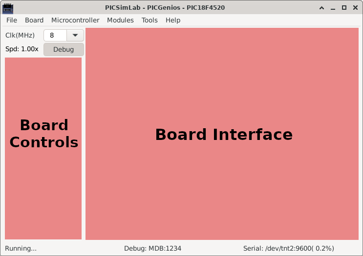
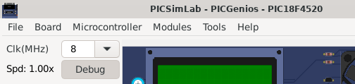

3.1 Main Window
The main window consists of a menu, a status bar, a frequency selection combobox, an on/off button to trigger debugging, some board-specific controls and the part of the board interface itself.
In the title of the window is shown the name of the simulator PICSimLab, followed by the board and the microcontroller in use.

The frequency selection combobox directly changes the working speed of the microcontroller. The “Spd” label show the ratio between simulation speed and real time. when the “Spd” label goes red indicates that the computer is not being able to run the program in real time for the selected clock. In this case the simulation may present some difference than expected and the CPU load will be increased.
The on/off button to enable debugging is used to enable debugging support, when active simulation load is increased.
The menus and their functions are listed below:
-
File
- Load Hex - Load .hex files
- Reload Last - Reload the last used .hex file
- Save Hex - Save memory in a .hex file
- Configure - Open the configuration windows
- Save Workspace - Saves all current workspace settings to a .pzw file
- Load Workspace - Loads saved settings from a .pzw file
- Exit
-
Board
- Arduino Uno - Choose board Arduino Uno
- Breadboard - Choose board Breadboard
- Franzininho - Choose board Franzininho
- K16F - Choose board K16F
- McLab1 - Choose board McLab1
- McLab2 - Choose board McLab2
- PICGenios - Choose board PICGenios
- PQDB - Choose board PQDB
- uCboard - Choose board uCboard
-
Microcontroller
- xxxxx - Selects the microcontroller to be used (depends on the selected board)
-
Modules
- Oscilloscope - Open the oscilloscope window
- Spare parts - Open the spare parts window
-
Tools
- Serial Terminal - Open the serial terminal (default Cutecom)
- Serial Remote Tank - Open the remote tank simulator
- Esp8266 Modem Simulator - Open the Esp8266 Modem Simulator
- Arduino Bootloader - Load microcontroller with Arduino serial bootloader
- MPLABX Debugger Plugin - Open the web page to download the MPLABX Debugger Plugin
- Pin Viewer - Open the Pin Viewer
-
Help
- Contents - Open the Help window
- Board - Open the Board Help window
- Examples - Load the examples
- About Board - Show message about author and version of board
- About PICSimLab - Show message about author and version of PICSimLab

The first part of the status bar shows the state of the simulation, in the middle part the status of the debug support and in the last part the name of the serial port used, its default speed and the error in relation to the real speed configured in the microcontroller.